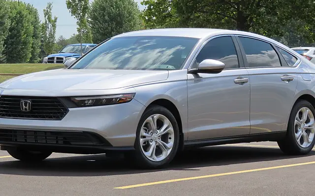

Par Motor › Precios por modelo › Honda Accord
Precio de segunda mano · noviembre de 2026¿Cuánto vale un Honda Accord de segunda mano?

Precio justo estimado de un Honda Accord usado en España, año por año, con los kilómetros normales para su edad y en buen estado: de 5.300 € a 14.900 €. Para tasar el tuyo con sus kilómetros reales y su estado, usa el tasador gratis.
Precios del Honda Accord por año
Accord VII (2003–2008)
Precio de nuevo: 2.0 155 CV, 27.000 € · 2.2 i-CTDi 140 CV, 29.000 € · 2.4 190 CV, 32.000 €
| Año | Km normales | 2.0 155 CV · Gasolina | 2.2 i-CTDi 140 CV · Diésel | 2.4 190 CV · Gasolina |
|---|---|---|---|---|
| 2008 | 100.000 km | 7.600 € | 8.000 € | 9.100 € |
| 2007 | 100.000 km | 7.100 € | 7.400 € | 8.400 € |
| 2006 | 100.000 km | 6.600 € | 6.900 € | 7.800 € |
| 2005 | 100.000 km | 6.100 € | 6.400 € | 7.200 € |
| 2004 | 100.000 km | 5.700 € | 5.900 € | 6.700 € |
| 2003 | 100.000 km | 5.300 € | 5.500 € | 6.200 € |
Accord VIII (2008–2015)
Precio de nuevo: 2.0 156 CV, 29.000 € · 2.2 i-DTEC 150 CV, 32.000 € · 2.4 201 CV, 33.000 €
| Año | Km normales | 2.0 156 CV · Gasolina | 2.2 i-DTEC 150 CV · Diésel | 2.4 201 CV · Gasolina |
|---|---|---|---|---|
| 2015 | 100.000 km | 13.100 € | 14.800 € | 14.900 € |
| 2014 | 100.000 km | 12.700 € | 13.700 € | 14.400 € |
| 2013 | 100.000 km | 11.900 € | 12.700 € | 13.500 € |
| 2012 | 100.000 km | 11.000 € | 11.800 € | 12.600 € |
| 2011 | 100.000 km | 10.300 € | 11.000 € | 11.700 € |
| 2010 | 100.000 km | 9.500 € | 10.200 € | 10.800 € |
| 2009 | 100.000 km | 8.800 € | 9.500 € | 10.100 € |
| 2008 | 100.000 km | 8.200 € | 8.800 € | 9.300 € |
Kilómetros normales: 15.000 al año en gasolina, híbridos y eléctricos, y 20.000 en diésel, con un máximo de 100.000 km (por encima no tasamos: el precio depende demasiado del historial de cada coche). Cifras redondeadas a 100 €.
Preguntas frecuentes
¿Cuánto vale un Honda Accord de segunda mano?
Según el año, la versión y los kilómetros, un Honda Accord usado vale hoy de 5.300 € a 14.900 € en España. El más barato de nuestra tabla es un 2.0 de 2003 (5.300 €) y el más caro un 2.4 de 2015 (14.900 €). Son precios justos estimados entre particulares y profesionales, con los kilómetros normales para su edad y en buen estado.
¿Cuánto valor pierde un Honda Accord al año?
Con unos años encima, un Honda Accord pierde alrededor de un 7 % de su valor cada año (calculado sobre el 2.0 de la generación Accord VIII). Los primeros años la caída es mayor y a partir de los 70.000 km se acelera.
¿Qué motorizaciones tiene el Honda Accord?
En nuestra base de datos hay versiones gasolina y diésel, en 2 generaciónes: Accord VII y Accord VIII.
¿Cómo sé si me piden demasiado por un Honda Accord?
Abre el tasador de Par Motor, elige el Honda Accord, el año y los kilómetros reales, y escribe lo que te piden. Te diremos si está por debajo del precio justo (chollo) o por encima (caro). Es gratis y no pide registro ni matrícula.
Otros Honda
Compara su coste real
El precio de compra es solo una parte. Mira cuánto te costaría al mes con combustible, seguro, neumáticos, mantenimiento y lo que pierde de valor.
Abrir el comparador →